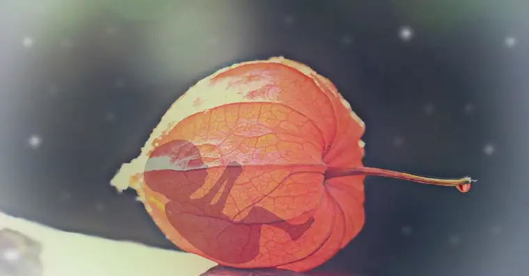

WEST FARGO — In the 1973 opinion of the U.S. Supreme Court decision Roe v. Wade, Chief Justice Harry A. Blackmun declared that abortion was a necessary step toward the full emancipation of women.
But abortion has brought only bondage these last 50 years, says Jody Clemens, a local woman who has had an abortion. “Evidence shows many women are dealing with the devastating, negative effects of abortion,” including physical, mental and spiritual pain.
Abortion brings empty promises: that it will eliminate a problem, broaden the future and always remain hidden, she says. But these women carry a “shameful secret,” causing them to live, both prior to and after the abortion, in silence and fear that only intensifies later.
“Our abortions become our identities and we don’t know where to turn,” she says. “We feel like a disgrace to ourselves, our families, our society and the church.”
True emancipation can only begin, she says, through sharing the truth.

McKenzie’s story
Heartbeat International predicted that by 2022, over 70% of abortions would happen chemically through a pill prompting premature labor. It also cited a 500% increase in emergency room visits due to chemical abortions.
McKenzie McCoy, of Watford City, 28 at the time of her abortion, says she should have been among them. After taking the abortion pill, she spent two days in the dark on her bathroom floor covered in bloody towels.
“It was like a time warp,” she says of those 48 hours. “I started vomiting, the pain was so intense, and then the bleeding began.”
She recalls the moment her “baby came out,” and its perfect shape, “like those little (human development) models,” she says.
“I remember seeing its eye,” she continues, her voice breaking. “I flushed it down the toilet.”
Finally turning on the light, she says, it looked like a murder scene with blood everywhere. “And I realized, someone had been murdered.”
She and the baby’s father split up, and McKenzie began to drink heavily, eventually dropping out of graduate school. “I was a mess,” she says, noting that she attempted suicide several times, feeling her death would be a just response to killing her child.
But by God’s grace, she says, she survived, met and married Jake, and welcomed three children. Instead of abandoning her when she finally revealed her secret, Jake helped her heal.
“The whole culture of death is a house of lies,” McKenzie says, noting that she’d lied to her boss about her absence, and to her parents about why she couldn’t come home for Christmas, using a monetary Christmas gift to pay for the $750 abortion. “Anytime there’s a chance to insert truth into that house of lies, it takes one more chink out of the armor.”
McKenzie recently became executive director of North Dakota Right to Life, dedicating her life’s work to the memory of her aborted child, she says. She marvels at God having known in advance how he would “mend her back together,” through her “marrying a Catholic, pro-life guy,” and sharing her story.

Erin’s story
Erin Hill, of Kindred, N.D., recalls running out of history class at age 16 and into the bathroom to vomit. By the time she decided what she’d do about her pregnancy to avoid bringing shame to her family, she was 19 weeks along — too advanced for an abortion in Fargo.
Instead, she went to Minneapolis for a several-day procedure. “I cried the whole time,” Erin says. When a nurse asked her why she was crying, she replied, “You know why. Because I’m here to kill my baby.”
When she was presented a form to release her child’s remains for scientific research, she says, she refused, despite feeling pressured.
In her heart, Erin says, she didn’t want to do it, but “nobody came with an outstretched hand to say, ‘I’ll be with you; it’s OK.’” Instead, abortion day proceeded, “playing back for me like a horror movie,” with the patients silent and spaced apart.
Though feeling mostly numb herself, Erin says, when the doctor “jammed in the laminaria sticks” to soften her cervix, she felt as if she were being raped. “I hated him because he had just violated me.”
Erin and the baby’s father ended up parting ways, but in college, she met her husband, Chad, who led her to Christ — the reason for her hope and healing, she says.
“It’s been a process, a slow relinquishing of those little parts of my heart that I didn’t want to lose,” she says, noting that at times, she welcomed pain, viewing it as “a badge, a way of honoring my kid,” and punishing herself.
When her 19-year-old was born, Erin says, “I remember my arms physically aching — while I was holding him — to hold my (aborted) child,” and thinking she didn’t deserve this one, either.
Now, when she sees women angrily defending abortion, Erin wonders if they’ve had an abortion themselves. Many “won’t realize the pivot in their lives of behavior that results,” but eventually, they will experience a “slow fade into destructive behavior.”
The only remedy for that pain, she says, is the light of Christ “shed upon their hearts and lives, revealing both their sin and a way out of the depraved lives they are unwittingly living.”
Brittany’s story
Requesting her last name be omitted due to the fragile health of several loved ones, Brittany, Fargo, shares that she was 17 at the time of her abortion, living a “double life,” dating someone she’d been forbidden to see.
Brittany had grown up with faith, she says, knowing abortion was “essentially murder.” But her father had passed away a few years earlier and “the turmoil from that led to me hiding a lot of things,” including the pregnancy.
Brittany learned of a judicial bypass provision in North Dakota law that could help her procure an abortion without her mother knowing. The Red River Women’s Clinic was “very willing to help me go through” that process, she says, securing an early morning court appointment with enough time to get back to the facility in time for the abortion.
That morning, a friend called into the school pretending to be her mom, excusing her for a doctor’s appointment. Their adolescent plot had been successful.
But in hindsight, Brittany says she feels sick — about the abortion itself, and involving friends. “I let my selfishness take over, and tried to believe the lies they tell you: that it’s just a clump of cells, a product of conception, and not a baby yet.”
Brittany says she felt an immense sadness afterward, leaving the facility with a paper bag containing pain medications, which became a symbol of her loss.
“I never got an ultrasound picture or any evidence of my child,” she says. “So, I held onto that bag, subconsciously trying to find some sort of anchor to my child.”
When Brittany’s mom discovered the truth, it “broke her,” she says. “She was grieving the loss of her grandchild, and also, the loss of her daughter in a way. I wasn’t who she thought I was. She was so heartbroken.”
Brittany eventually married, and has two children, but with both deliveries, she experienced complications and thought she might die of the hemorrhaging — a fate she says she felt she deserved.
Now, she wants to warn women considering abortion that things won’t just “go back to normal” afterward. “We give women a way to squash their problem… and it only creates more turmoil, trauma and lies.”
She wishes she could apologize to her baby, and let him know she thinks about him all the time.
“And with the time I have left, I want to make him proud. I look forward to the day I can hug him (in heaven).”
Hopeful help
All four women, part of the PALS (Post Abortive Ladies) panel that will speak in Grand Forks on June 7, conveyed that with Christ, there is hope.
“The father of lies, Satan himself, wants us to stay in our isolation and shame,” Jody says. “However, when we exchange the lies we have believed for the truth of God, we can find true redemption, mercy, forgiveness and healing.”
She also helps moderate a “Forgiven and Set Free” group for the post-abortive at various area Christian churches, and says that Rachel’s Vineyard retreats, offered through the Fargo Diocese, have helped many women affected negatively by abortion to heal.
With the possible overturning of Roe v. Wade, Jody says, abortion is being rightly highlighted.
“God has put a dividing line in the sand,” she says, and the Church needs to step up. “One in four women in the pews has had an abortion. We need to be ready to help those who are hurting.”
If you go
What: “It’s Time to Listen” featuring the Post Abortive Ladies (PALS)
When: 7 p.m. Tuesday, June 7
Where: Hope Church, 1601 17th Ave. S., Grand Forks
Cost: Free (ages 13+)
Contact: Jody Clemens (701-367-7362)
[For the sake of having a repository for my newspaper columns and articles, I reprint them here, with permission, a week after their run date. The preceding ran in The Forum newspaper on May 27, 2022.]